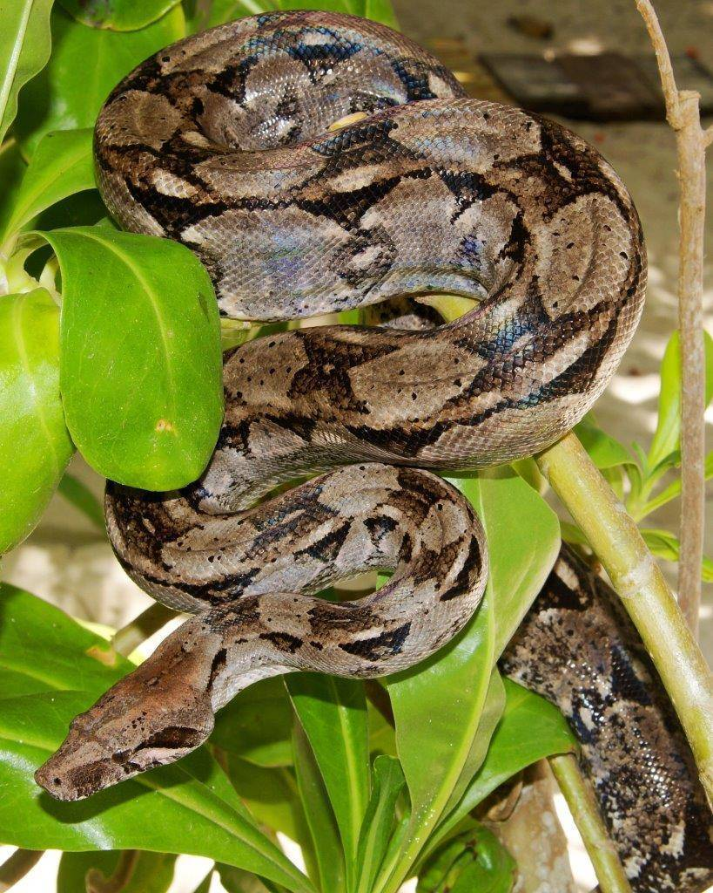

Boa yılanı, Güney ve Orta Amerika’nın tropikal ormanları ile savanlarında yaşayan, iri yapılı ve güçlü kaslarıyla tanınan bir boğucu yılan türüdür; zehirli değildir, avlarını vücutlarıyla sararak sıkar ve boğarak etkisiz hale getirir; kahverengi, gri ve kırmızımsı desenli derisiyle çevresine uyum sağlar, ortalama 20–30 yıl yaşar ve 3–5 metre uzunluğa ulaşabilir; geceleri aktif olan bu tür, kuşlar, küçük memeliler ve sürünginlerle beslenir; doğumla çoğalan nadir yılanlardan biridir, dişiler yumurta bırakmaz, yavrularını canlı olarak dünyaya getirir; insanlar için genellikle tehlikeli değildir ancak iri yapısı nedeniyle dikkatle yaklaşılması gerekir; kültürel açıdan ise birçok toplumda güç, gizem ve doğanın dengesiyle ilişkilendirilmiş bir sembol olarak görülür.